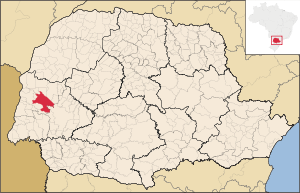

Principais Pontos
Pontos de destaque
- Aquário Municipal Dr. Rômolo Martinelli
- Catedral Cristo Rei
- Igreja Evangélica de Confissão Luterana no Brasil (Igreja do Sino)
- Jardim Zoobotânico de Toledo - Parque das Aves (Horto municipal)
- Museu Histórico Willy Barth
- Parque do Povo - Luiz Cláudio Hoffmann
- Parque dos Pioneiros
- Parque Ecológico Diva Paim Barth
- Parque Linear Sanga Panambi
- Parque Temático das Águas
- Praça Willy Barth
- Rua 7 de Setembro
- Salto São Francisco Falso
- Teatro Municipal de Toledo

Historia
O Município de Toledo prepara-se para chamada Indústria do Terceiro Milênio, contando com várias opções de turismo, lazer, gastronomia, cultura, esporte e eventos de negócios. Possui selos da EMBRATUR que o credenciam como município com potencialidade e prioridade para o desenvolvimento turístico.[38] Conta com belezas naturais, como saltos, cachoeiras, trilhas ecológicos no Rio São Francisco, com destaque para o Parque Ecológico Diva Paim Barth, em plena região central, com um lago, horto florestal e outros atrativos, que o tornam ponto de encontro da população.[
Bandeira

Brasão